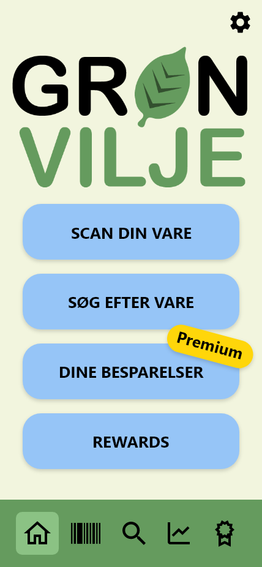
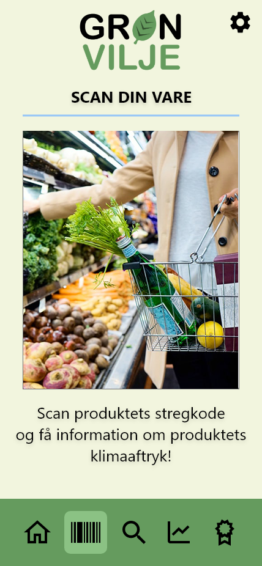
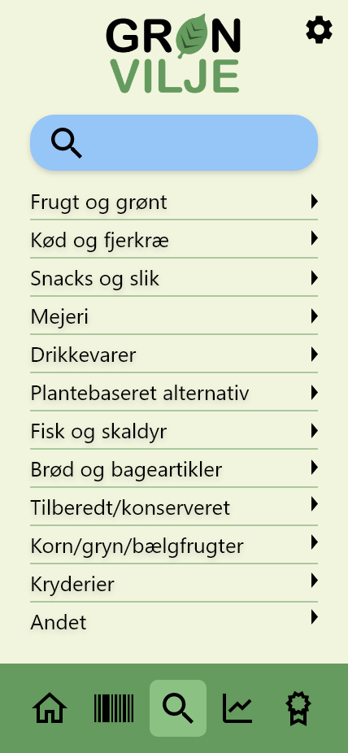
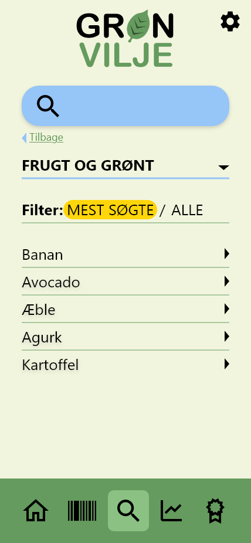
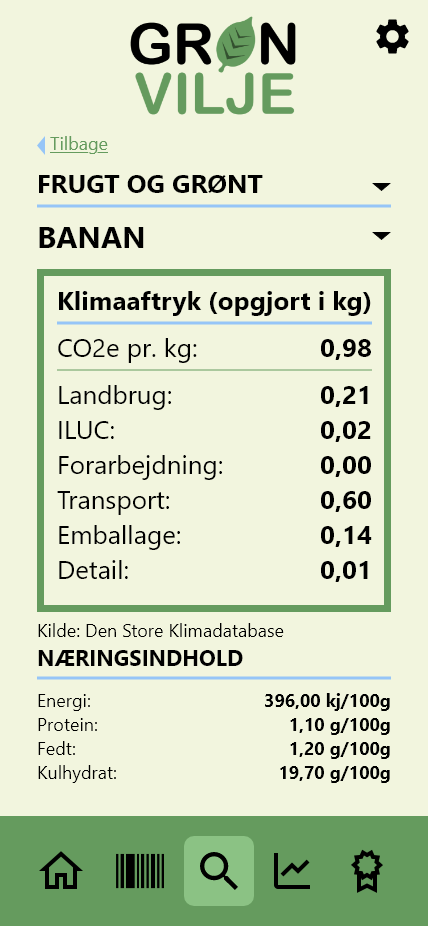

Step 1: Velkommen til Grøn Vilje Appen, du er nu på forsiden! Du kan nu vælge at enten scanne en vares stregkode eller søge efter en vare.
Step 2 a: Her ser du "Scan din side", hvor du blot scanner stregkoden på din vare. Så snart scanneren har registreret stregkoden, vil du få al information om varen.
Step 2 b: Hvis der ikke er en stregkode på din vare, har vi heldigvis en løsning! Så kan du blot søge efter din vare. Her kan du enten indtaste søgeordet, eller vælge en kategori der passer din fødevare.
Step 3: Her ser du hvordan det ser ud når man har trykket sig ind på "Frugt og grønt" kategorien. I toppen bliver der foreslået de mest populære vare. Er efterspurgte produkt ikke i foreslået sektionen, kan du blot søge efter varen.
Step 4: Her ser du hvordan det ser ud når du har valgt en vare. Her kan du se samlede CO2 aftryk, samt se udledningen opdelt i kategorier
